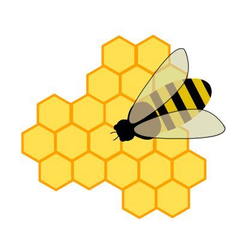

Artificial Bee Colony#
-
class bee_colony#
Artificial Bee Colony Algorithm.

Artificial Bee Colony is an optimization algorithm based on the intelligent foraging behaviour of honey bee swarm, proposed by Karaboga in 2005.
The implementation provided for PaGMO is based on the pseudo-code provided in Mernik et al. (2015) - Algorithm 2. pagmo::bee_colony is suitable for box-constrained single-objective continuous optimization.
See: https://abc.erciyes.edu.tr/ for the official ABC web site
See: https://link.springer.com/article/10.1007/s10898-007-9149-x for the paper that introduces Artificial Bee Colony
See: https://www.sciencedirect.com/science/article/pii/S0020025514008378 for the pseudo-code
Public Types
-
typedef std::tuple<unsigned, unsigned long long, double, double> log_line_type#
Single entry of the log (gen, fevals, best, cur_best)
-
typedef std::vector<log_line_type> log_type#
The log.
Public Functions
-
bee_colony(unsigned gen = 1u, unsigned limit = 20u, unsigned seed = pagmo::random_device::next())#
Constructor.
Constructs a bee_colony algorithm
- Parameters
gen – number of generations. Note that the total number of fitness evaluations will be 2*gen
limit – maximum number of trials for abandoning a source
seed – seed used by the internal random number generator (default is random)
- Throws
std::invalid_argument – if limit equals 0
-
population evolve(population) const#
Algorithm evolve method.
Evolves the population for a maximum number of generations
- Parameters
pop – population to be evolved
- Throws
std::invalid_argument – if the problem is multi-objective or constrained or stochastic
std::invalid_argument – if the population size is smaller than 2
- Returns
evolved population
-
void set_seed(unsigned)#
Sets the seed.
- Parameters
seed – the seed controlling the algorithm stochastic behaviour
-
inline unsigned get_seed() const#
Gets the seed.
- Returns
the seed controlling the algorithm stochastic behaviour
-
inline void set_verbosity(unsigned level)#
Sets the algorithm verbosity.
Sets the verbosity level of the screen output and of the log returned by get_log().
levelcan be:0: no verbosity
>0: will print and log one line each
levelgenerations.
Example (verbosity 100):
Gen is the generation number, Fevals the number of function evaluation used, , Best is the best fitness found, Current best is the best fitness currently in the population.Gen: Fevals: Best: Current Best: 1 40 261363 261363 101 4040 112.237 267.969 201 8040 20.8885 265.122 301 12040 20.6076 20.6076 401 16040 18.252 140.079
- Parameters
level – verbosity level
-
inline unsigned get_verbosity() const#
Gets the verbosity level.
- Returns
the verbosity level
-
inline unsigned get_gen() const#
Gets the number of generations.
- Returns
the number of generations to evolve for
-
inline std::string get_name() const#
Algorithm name.
- Returns
a string containing the algorithm name
-
std::string get_extra_info() const#
Extra info.
- Returns
a string containing extra info on the algorithm
-
inline const log_type &get_log() const#
Get log.
A log containing relevant quantities monitoring the last call to evolve. Each element of the returned
std::vectoris a bee_colony::log_line_type containing: Gen, Fevals, Current best, Best as described in bee_colony::set_verbosity().- Returns
an
std::vectorof bee_colony::log_line_type containing the logged values Gen, Fevals, Current best, Best
-
typedef std::tuple<unsigned, unsigned long long, double, double> log_line_type#